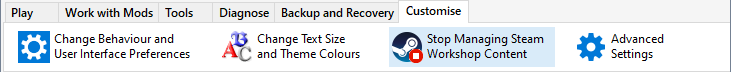
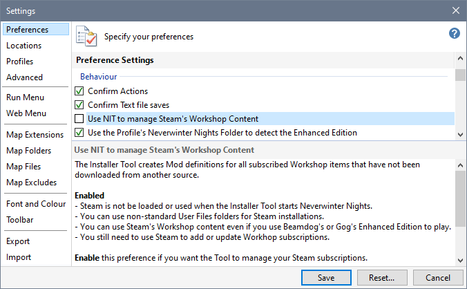
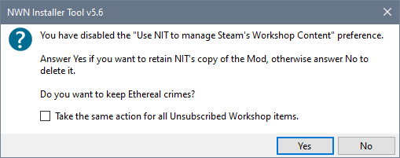
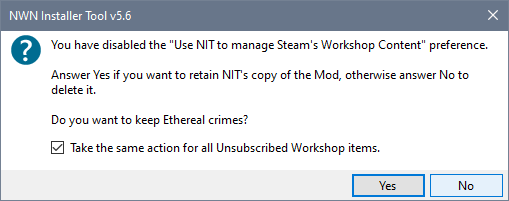

You can click Stop Managing Steam Workshop Content on the ribbon's Customise tab to stop the Tool's management of your Workshop Subscriptions or use Preferences in Advanced Settings to disable the management of your Workshop Subscriptions.




Steam Workshop Subscription information is retained so that Identifier to Mod Name mapping preferences are available in case you enable management again.
Enable Steam Workshop Subscription Management
Detect Steam Workshop Subscriptions
Disable Steam Workshop Subscription Management